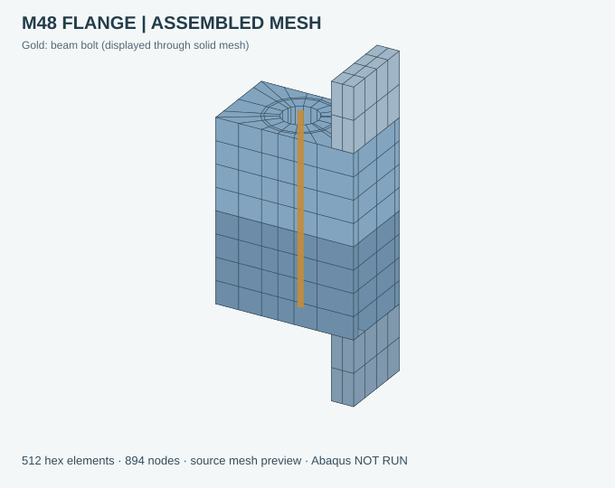
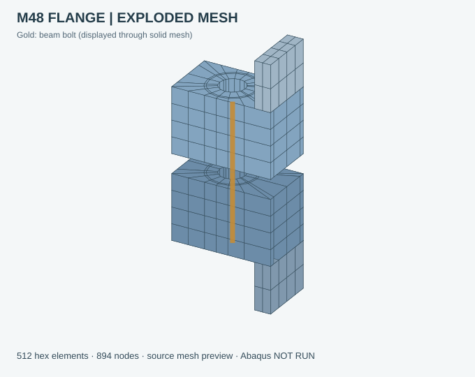

钢法兰螺栓与预应力锚固 · 局部试件 V1
真实节点及单元网格预览 · 非原型施工图 · Abaqus原生未运行 · REV22不变
01 钢塔双法兰 M48 螺栓


单螺栓节距试件：两片140 mm法兰、32 mm塔壁、B31螺栓、预紧926.1 kN、法兰面硬接触。参考2 MW期刊工程，不是10 MW原型尺寸。
下载法兰 INP · 期刊原文 §2.6、§3.102 15.2 mm钢绞线等效夹片锚固

单股140 mm²、1280 MPa，名义初始拉力179.2 kN。夹片锚具以承压区域分布耦合替代，钢绞线穿过带孔承压板和混凝土。试件尺寸假设，非实际基础及锚具设计。
下载锚固 INP · 材料参考静态检查
法兰：894节点、514单元；锚固：578节点、337单元。所有实体单元8点Jacobian为正。未执行Abaqus原生Data Check及求解。
完整数据及假设 · 建模记录